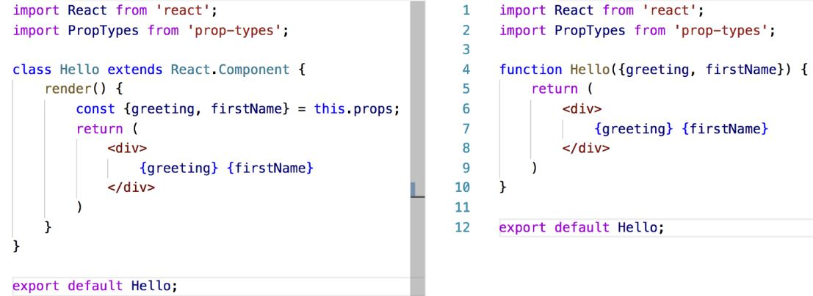
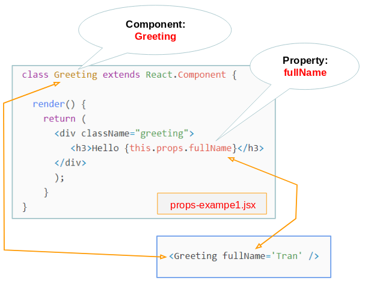

Component: Function vs. Classes
The most obvious one difference is the syntax. A functional component is just a plain JavaScript function which accepts props as an argument and returns a React element. A class component requires you to extend from React. Component and create a render function which returns a React element.
Function Component
- It is simple javascript functions that simply returns html UI
- It is also called “stateless” components because they simply accept data and display them in some form that is they are mainly responsible for rendering UI.
- It accept properties(props) in function and return html(JSX)
- It gives solution without using state
- There is no render method used in functional components.
- These can be typically defined using arrow functions but can also be created with the regular function keyword.
Function component syntax
Class Component or Stateful Component
- It is regular ES6 classes that extends component class form react library
- Also known as “stateful” components because they implement logic and state.
- It must have render() method returning html
- It has complex UI Logic
- You pass props to class components and access them with this.props
- If you need lifecycle hooks you should probably use a class component.
Class component syntax

Props class Component
State class Component
The state is an instance of React Component Class can be defined as an object of a set of observable properties that control the behavior of the component. In other words, the State of a component is an object that holds some information that may change over the lifetime of the component.
- The state object is where you store property values that belongs to the component.
- When the state object changes, the component re-renders.
Changing the state Object
To change a value in the state object, use the this.setState() method. When a value in the state object changes, the component will re-render, meaning that the output will change according to the new value(s).
Always use the setState() method to change the state object, it will ensure that the component knows its been updated and calls the render() method (and all the other lifecycle methods).
Lifecycle of Components
All the React component's lifecycle methods can be split into four phases: initialization, mounting, updating and unmounting. The process where all these stages are involved is called the component's lifecycle and every React component goes through it Each component in React has a lifecycle which you can monitor and manipulate during its three main phases. The three phases are: Mounting, Updating, and Unmounting.
Mounting
Mounting means putting elements into the DOM. React has four built-in methods that gets called, in this order, when mounting a component:
- constructor()
- render()
- componentDidMount()
- getDerivedStateFromProps()
componentWillMount()
Constructor
The constructor() method is called before anything else, when the component is initiated, and it is the natural place to set up the initial state and other initial values. The constructor() method is called with the props, as arguments, and you should always start by calling the super(props) before anything else, this will initiate the parent's constructor method and allows the component to inherit methods from its parent (React.Component).
The constructor method is called, by React, every time you make a component:
Render
First of all, render() is not user callable. It is part of the React component lifecycle and is called by React at various app stages, generally when the React component is first instantiated, or when there is a new update to the component state. Render does not take any arguments, and returns a JSX.Element which contains the view hierarchy of the current component. This view hierarchy will later be translated into HTML and displayed in the browser window.
4 methods to force a re-render in React
- Re-render component when state changes. Any time a React component state has changed, React has to run the render() method. ...
- Re-render component when props change. ...
- Re-render with key prop. ...
- Force a re-render. this.forceUpdate();
What is componentDidMount?
The componentDidMount() method allows us to execute the React code when the component is already placed in the DOM (Document Object Model). This method is called during the Mounting phase of the React Life-cycle i.e after the component is rendered. The componentDidMount() method of child components is invoked before that of parent components. If you want to integrate with other JavaScript frameworks, set timers using setTimeout or setInterval , or send AJAX requests, perform those operations in this method
What is getDerivedStateFromProps?
Also at updates the getDerivedStateFromProps method is called. This is the first method that is called when a component gets updated. This is still the natural place to set the state object based on the initial props. The example below has a button that changes the favorite color to blue, but since the getDerivedStateFromProps() method is called, which updates the state with the color from the favcol attribute, the favorite color is still rendered as yellow:
Updating
The next phase in the lifecycle is when a component is updated. A component is updated whenever there is a change in the component's state or props. React has five built-in methods that gets called, in this order, when a component is updated:
- render()
- componentDidUpdate()
- getSnapshotBeforeUpdate()
- shouldComponentUpdate()
- getDerivedStateFromProps()
What is componentDidUpdate?
The componentDidUpdate function is a part of a React component’s life cycle. It is called when a component got updated. This might happen if new props have been provided by a parent component or an internal state has been changed. The componentDidUpdate gets called after a render, which means that we can access DOM nodes in it. This function receives previous props and state as parameters. It can also access new props and state with this.props and this.state:
What is shouldComponentUpdate?
In the shouldComponentUpdate() method you can return a Boolean value that specifies whether React should continue with the rendering or not. The default value is true. The example below shows what happens when the shouldComponentUpdate() method returns false:
Unmounting
The next phase in the lifecycle is when a component is removed from the DOM, or unmounting as React likes to call it. React has only one built-in method that gets called when a component is unmounted:
- componentWillUnmount()
The componentWillUnmount method is called when the component is about to be removed from the DOM.
What is a react Event
An event is an action that could be triggered as a result of the user action or system generated event. For example, a mouse click, loading of a web page, pressing a key, window resizes, and other interactions are called events. React has its own event handling system which is very similar to handling events on DOM elements. The react event handling system is known as Synthetic Events. The synthetic event is a cross-browser wrapper of the browser's native event.
- React events are named as camelCase instead of lowercase.
- With JSX, a function is passed as the event handler instead of a string. For example:
Adding Forms in React
Handling forms is about how you handle the data when it changes value or gets submitted. In HTML, form data is usually handled by the DOM. In React, form data is usually handled by the components. When the data is handled by the components, all the data is stored in the component state. You can control changes by adding event handlers in the onChange attribute:
- Note: You must initialize the state in the constructor method before you can use it.
- Note: You get access to the field value by using the event.target.value syntax.